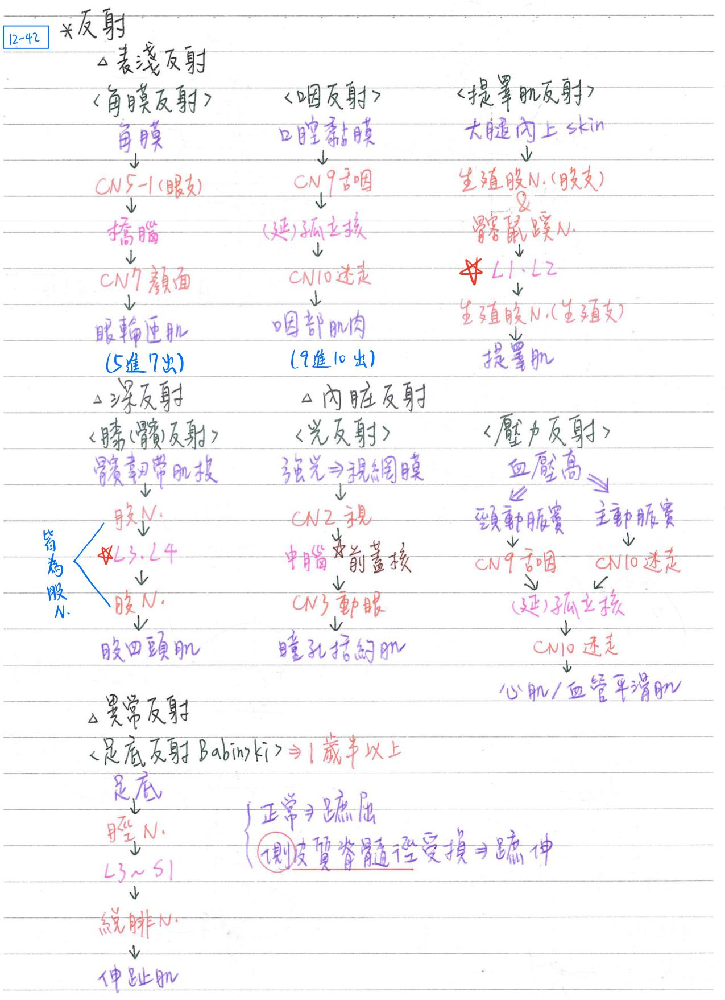

🪞 神經系統：反射
- 定義：不隨意的「刺激一反應」機轉(不經大腦皮質的神經傳導)
- 功能：保護機制、維持恆定(反應時間：約20ms)
- 反射弧(reflex arc)：反射的神經傳導路徑；至少包括下列四項：
- 感覺接受器(receptor)
- 輸入(afferent)：感覺神經元
- 輸出(efferent)：運動神經元
- 反應器(effector)：肌肉或腺體
反射分類：4類
表淺反射(superficial reflex)
- 角膜反射(corneal reflex)=眨眼反射(blink reflex)：5進7出；因觸碰角膜、異物進入或明亮的光線引發(所以不一定是直接碰到)
- 路徑：角膜→★[110-1]鼻睫N(CN5-1)→橋腦(三叉橋腦核)→橋腦(兩側顏面運動核)→兩側顏面N→兩側眼輪匝肌
- 咽反射(pharyngeal reflex)=作嘔反射(gag reflex)：9進10出
- 口咽黏膜→舌咽N→延腦(孤立徑核)→迷走N→咽部肌肉
- ★提睪肌反射(cremasteric reflex)：進出皆有生殖股N(股枝)
- 路徑：大腿內上方皮膚→生殖股N(股枝)&髂鼠蹊N→脊髓(L1~L2)→生殖股N(生殖枝)→提睪肌
深反射(deep reflex)
- ★[109-1]髕反射(patellar reflex)=膝反射(knee jerk)：進出都是★股N[L2~L4脊神經合併成]
- 路徑：髕韌带肌梭→股N→脊髓(L2~L4)→股N→股四頭肌
備註
不是L3~L4，其中以L4為主
https://www.ncbi.nlm.nih.gov/books/NBK531502/
- 路徑：髕韌带肌梭→股N→脊髓(L2~L4)→股N→股四頭肌
內臟反射(visceral reflex)
- 光反射(light reflex)：維持光量恆定；2進3出
- 路徑：強光→視網膜→視N→中腦(前蓋核；光反射中樞)→中腦(兩側動眼神經EW核)
→兩側動眼N→兩側瞳孔括約肌→瞳孔縮小
- 同側=direct；對側=consensual
- 路徑：強光→視網膜→視N→中腦(前蓋核；光反射中樞)→中腦(兩側動眼神經EW核)
- 壓力反射(baroreflex)：維持血壓恆定
- 路徑：BP上升→頸動脈竇/主動脈竇(carotid sinus/aortic sinus)→★舌咽N/迷走N
→延腦(孤立徑核)→迷走N→心肌/血管平滑肌→BP下降
- 路徑：BP上升→頸動脈竇/主動脈竇(carotid sinus/aortic sinus)→★舌咽N/迷走N
- 化學反射(chemoreflex)：維持血中O2及CO2恆定
- 路徑：血中O2↑、C02↑、H↑ → 頸動脈體/主動脈體(carotid body/aortic body)
→★舌咽N/迷走N→延腦(呼吸節律中樞)→膈N/肋間N→橫膈膜、外肋間肌
→呼吸速率(RR)↑、潮氣容積(VT)↑、O2↑、C02↓、H↑
- 路徑：血中O2↑、C02↑、H↑ → 頸動脈體/主動脈體(carotid body/aortic body)
- 主動脈體、主動脈竇：迷走N
- ★頸動脈體、頸動脈竇：舌咽N
異常反射(abnormal reflex)
- 巴賓斯基氏反射(Babinski reflex)=足底反射(planar reflex)：
- 路徑：足底→脛N→脊髓(L3~S1)→總腓N→伸趾肌
- 蹠伸反應：
- 側皮質脊髓徑受損
- 1歲半以下的正常兒童，因尚未完全發育而出現此徵象
- 蹠屈反應：正常(劃一下腳底，腳趾縮起來)

反射中樞位階
- 大腦皮質：
- 蹲跳反應(hopping reaction)、安置反應(placing reaction，出現年齡：4天〜4週)
- 中腦：扶直(正身)反射(righting reflex)、聽反射、光反射等
- 延腦：
- 頸張力反射(tonic neck reflex)：轉頭→同側肢體伸張/對側肢體屈曲[hint：翻身睡覺的姿勢]，出現年齡：2月〜6月
- 脊髓：伸張反射(stretch reflex)，如膝反射等